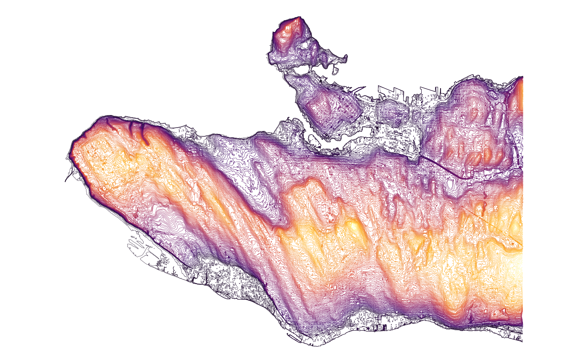

The City of Vancouver Open Data Portal includes an elevation contour
dataset with 1-metre contour lines covering the city. Because the
dataset has a geo_shape field, get_cov_data()
automatically returns it as an sf object, so it can be
passed directly to geom_sf() without any additional
conversion.
contours <- get_cov_data("elevation-contour-lines-1-metre-contours")
#> Downloading data from CoV Open Data portal
class(contours) # "sf" "data.frame"
#> [1] "sf" "tbl_df" "tbl" "data.frame"Mapping the contour lines coloured by elevation takes only a few lines:
ggplot(contours) +
geom_sf(aes(color=elevation), size=0.1) +
scale_color_viridis_c(option="inferno", guide="none") +
theme_void()
The same pattern works for any spatial dataset on the portal. Use
get_cov_metadata() to check whether a dataset has a
geo_shape field before downloading:
get_cov_metadata("elevation-contour-lines-1-metre-contours") |>
dplyr::filter(type == "geo_shape")
#> # A tibble: 1 × 4
#> name type label description
#> <chr> <chr> <chr> <chr>
#> 1 geom geo_shape Geom Spatial representation